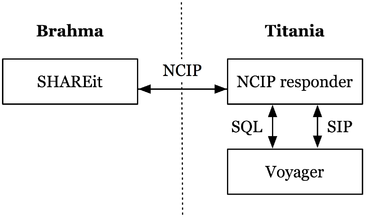

vncip is an NCIP version 1 responder for the Voyager ILS.
Other required software will be installed as part of the installation process. This includes The Z Shell (zsh) and a number of Perl modules, for example:
NCIP is a protocol for automating circulation and lending tasks – for example, a regional ILL service might use NCIP to request items from a lending ILS and check them out to the borrowing ILS.
In an NCIP transaction, the initiator sends a specially formatted request to a responder asking it to perform some task – for example, retrieving information about a patron or placing a hold on an item. The responder performs the task (if appropriate) and returns a response to the initiator.
Both requests and responses are in an XML form and may consist of a complex “tree” of XML elements, most of which are optional.
The following illustration shows the message pathways in a typical installation (the author’s):
Here, Brahma is a server running the SHAREit platform from Auto-Graphics and Titania is the server on which Voyager is running. It should be possible to run vncip on a separate server, but that has not been tested.
The vncip responder is a system of Perl scripts and modules whose task is to receive incoming NCIP version 1 requests, figure out what to do with each request, do it (or ask Voyager to do it), build an appropriate response, and send the response back to the initiator.
Most of what vncip does is delegated to Voyager using SQL queries run against the Oracle database that stores Voyager’s data or via the extended SIP2 interface that Voyager provides. For example, checking out an item to a patron requires gathering information about the patron and the item using SQL, then using SIP to ask Voyager to check the item out.
The code that makes up vncip is divided among several principal components:
The NCIP1 daemon – this script runs continually and “drives” all of the other components.
A shell script to start and stop ncipd.
The main Perl module, which provides the “responder” proper. The responder coordinates the other Perl modules.
A Perl module that listens for incoming connections on the desired network port, reads requests that come in, and passes them off to the Biblio::NCIP1::Responder object.
The Perl module that embodies an NCIP1 request. It is responsible for parsing the XML that comes in from the NCIP initiator.
The Perl module that embodies an NCIP1 response. It is responsible for building the XML that will be sent back to the initiator.
A Perl module holding all of the Voyager-specific code.
vncip begins by translating the XML request into a Perl data structure